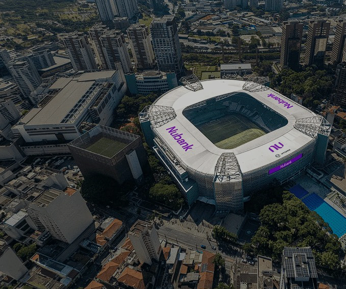

Estádio do Palmeiras levará nome do Nubank — Foto: Reprodução
Os números não são confirmados, mas se calcula que o Nubank irá pagar US$ 10 milhões (R$ 51 milhões) por ano pelos naming rights.
Isto significa praticamente o dobro do que a Allianz vinha desembolsando. O antigo acordo foi firmado em 2013 e passou a valer na inauguração da arena, em 2014.
A seguradora firmara um contrato com a WTorre de R$ 300 milhões por 20 anos, o que rendia inicialmente R$ 15 milhões por temporada. O valor era corrigido anualmente pela inflação do país.
Por ter sido fechado há praticamente 13 anos, o antigo acordo já era considerado defasado.
O Palmeiras não fez parte da negociação, pois diante da escritura de superfície, a exploração de propriedades de marketing do estádio é de responsabilidade da WTorre até 2044.
O clube recebe um percentual destes valores mensalmente, que aumenta a cada cinco anos. Pelos naming rights, a quantia subiu para 15% no último mês de novembro.
- O principal de onde estamos e da história construída é a história do Palmeiras. Tivemos momentos muito diferentes na relação com WTorre e Palmeiras. Se estamos aqui hoje, é pelo movimento que iniciamos em outubro de 2024, com o acordo para ter um alinhamento de imagem e interesse das duas instituições - disse Marcelo Frazão, vice-presidente da WTorre Entretenimento.
- O estádio é do Palmeiras, somos concessionários no período. Mais do que trabalhar juntos, trabalhamos para o Palmeiras - completou.
Por Robert Goya Arruda Ferro e Leonardo Araújo Santos — São Paulo
03/04/2026 18h28